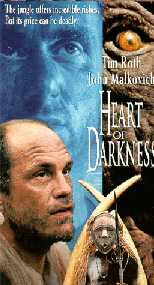
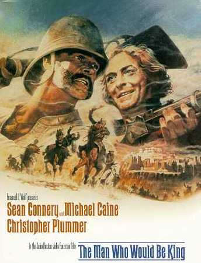

|

Texto de
Susana
Lopes de Alexandria
Episdio
inspira-se na mesma
fonte do filme "Apocalypse Now"

|
Embora a referncia no esteja explcita
em nenhuma cena do episdio, "The Wounded",
segundo a escritora e produtora Jeri Taylor, foi inspirado na
novela "Heart of Darkness", de Joseph Conrad
(novela um gnero literrio que se situa entre o conto e o
romance). Traduzido no Brasil como "Corao das
Trevas", o livro tambm inspirou um dos maiores  filmes do cinema: "Apocalypse Now" (1979), de Francis Ford Coppola."Heart of Darkness" trata da loucura e da ambio desmesurada. Marlow um marinheiro ambicioso e aventureiro que trabalha para uma companhia inglesa de comrcio e enviado para uma colnia africana. L, ele sobe um rio, visitando os postos avanados que trocam mercadorias por marfim com os nativos. Em sua viagem, ouve histrias sobre um homem chamado Kurtz, cujo posto avanado fica localizado mais adiante rio acima, embrenhado na mata africana. Alguns falam de Kurtz com terror, outros com admirao, mas todos parecem tem-lo. Ao aproximar-se do posto de Kurtz, Marlow se d conta de que o homem est completamente louco, cometendo atos terrveis e brbaros. Em "Apocalypse Now", o diretor Coppola transportou a histria para a Guerra do Vietn. O capito Willard (Martin Sheen) encarregado de encontrar o coronel Kurtz (Marlon Brando), um militar que elouqueceu em meio guerra, transformando seu posto avanado num horrendo imprio particular. No episdio "The Wounded", o capito Ben Maxwell faz as vezes de Kurtz, perdendo o controle emocional e recusando-se a aceitar o fim da guerra com os cardassianos, cometendo atos de loucura. "Heart of Darkness" tambm inspirou o filme de mesmo nome, de 1994, com John Malkovich no papel de Kurtz e Tim Roth como Marlow. Para saber mais sobre "Apocalypse
Now", clique aqui.
O'Brien canta "The Minstrel Boy"  Leia abaixo a letra da cano
irlandesa, seguida de uma traduo livre. Voc tambm pode
ouvir duas verses da cano:
The Minstrel Boy The minstrel boy to
the war is gone, "Land of Song!"
cried the warrior bard, The Minstrel fell!
But the foeman's steel And said "No
chains shall sully thee, O jovem menestrel O jovem menestrel
foi para a guerra, "Terra da Msica!",
gritou o poeta guerreiro, O menestrel caiu!
Mas o ao do inimigo E disse
"Nenhuma corrente ir manchar-te, |